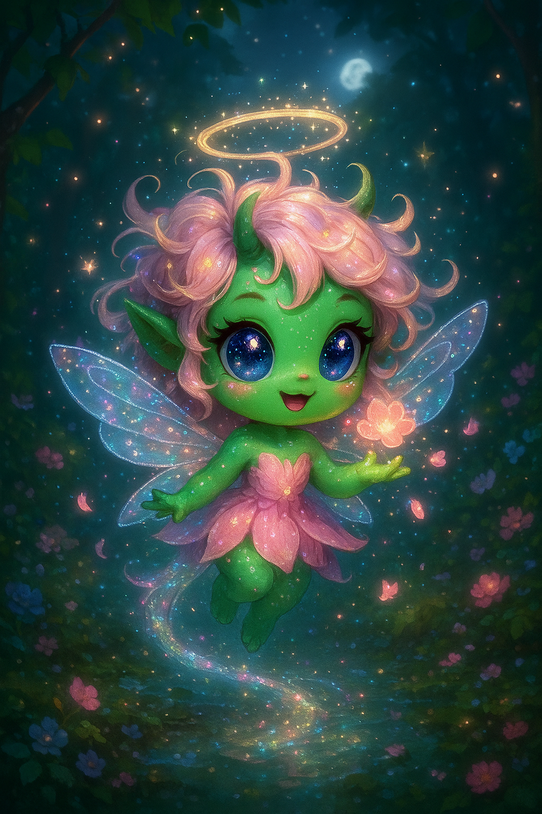

Lunita

Aparência
Olhos grandes e brilhantes, que refletem estrelas ou corações.
Cabelos desgrenhados mas fofos, como nuvens bagunçadinhas.
Cores suaves, geralmente rosa claro, lilás ou dourado.
Asas pequenas ou translúcidas, lembrando fadas ou borboletas.
Chifrinhos delicados ou uma auréola mágica, dependendo da lenda.
Tamanho pequeno, como se coubesse na palma da mão ou fosse um mascote mágico.
Habilidades
Criar luz suave para iluminar lugares escuros.
Gerar sonhos bons, afastando pesadelos.
Invocar flores ou pétalas ao seu redor.
Voar levemente, deixando um rastro brilhante no ar.
Mudar de cor conforme o humor, ficando mais clara ou mais intensa.
Habitat
Vive em florestas encantadas, jardins secretos ou entre as nuvens.
Pode ser vista perto de rios cristalinos ou em clareiras iluminadas pela lua.